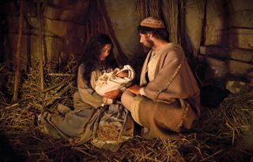

 Wishing you and your family a wonderful holiday season filled with warmth, love, and rejoicing in the birth of our Savior. May the joy of Christmas fill your heart and bring you peace and happiness.
We have had an eventful year full of ups and downs. We are so grateful for all that we have been able to accomplish and to all of our family and friends who have helped us achieve those goals. Our biggest and happiest announcement is that Kimberly is pregnant with a baby girl! After many years of prayers and the miracle of IVF, we are so excited to meet our daughter. We are looking forward to being a family of three in March 2025.
We live in a townhouse in western Lehi. Our community is growing quickly! Even after a ward split, our sacrament meetings still fill the chapel and the cultural hall. In the ward, Kimberly is the Music Director, and Eric is the Technology Specialist (surprise, surprise). We also accepted an assignment to be Trek Coordinators for 2025. Although Kimberly is happy to have a perfectly good excuse to miss Trek.
Every weekend we enjoy spending time with both sides of the family. We are fortunate to have the support of them always. We regularly have engaging conversations, lots of laughs, and so much fun playing with our niece and nephews. We spend many late nights on Saturday playing Fortnite squads with Kensie and Jake, and have become quite the team!
We have worked hard in our jobs this year. Kimberly is a Quality Engineer at Edwards Lifesciences. She supports the manufacturing of aortic heart valve replacements. After work, Kimberly enjoys spending quality time with her husband and reading her favorite book in a blanket.
Eric is a Software Engineer at Vivint. He works on the back-end software infrastructure. Eric has accumulated several smart home gadgets and is striving to make his home fully autonomous while trying to keep the wife’s approval factor high. He is also playing the cello after a ten-year hiatus, and we enjoy playing piano-cello duets.
We went on a spontaneous one-day trip to Disneyland in April. In the height of the emotional tolls of infertility, this vacation was a much-needed escape and a great way to celebrate Kimberly’s birthday. We enjoyed spending the whole day riding rides, eating sweets, and not having a care in the world. The highlight of the day for Eric was being able to get his beloved “Holiday Turkey” sandwich at the Earl of Sandwich for lunch.
In September, we were able to travel back to Vancouver, Washington, to visit our mission areas. This was the first time Eric has gone back since he came home. We visited the places we served and met with members and friends. We also did some sightseeing at the Oregon coast, the Portland Temple, and some waterfalls along the Columbia River Gorge.
As this year comes to a close. We are grateful for everything and everyone that has helped us in our journey. We look forward to so many great things happening in 2025. May the new year be great for us all!